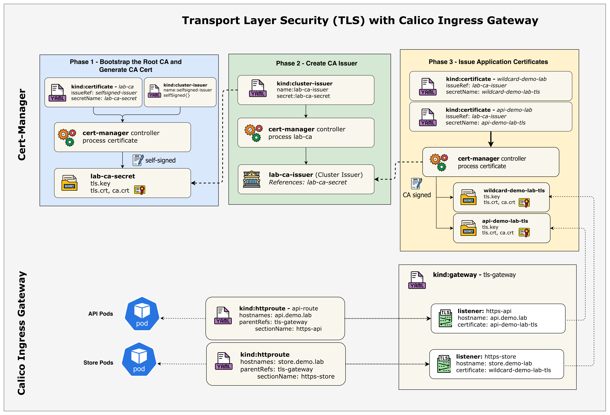
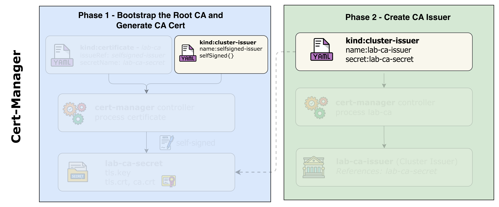
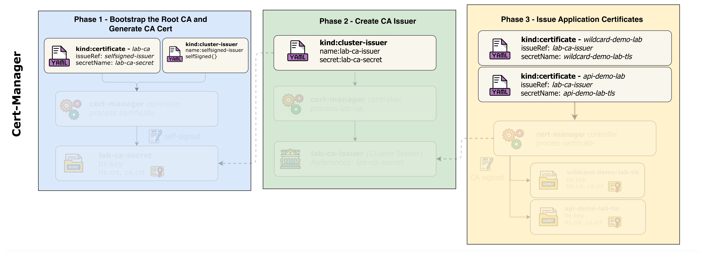
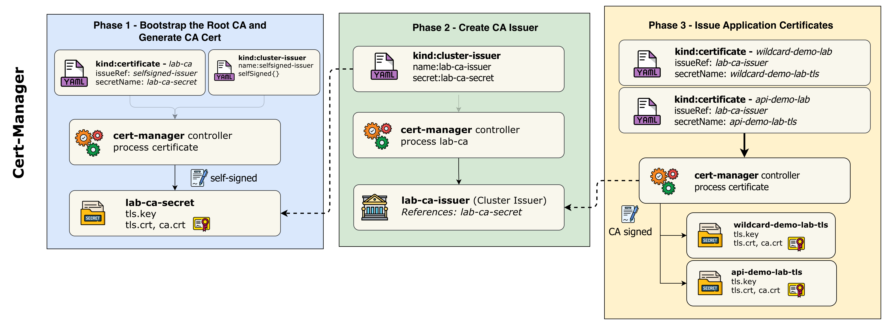

SNI + HTTPSLesson 20 · cert-manager · Local CA · Gateway API · Envoy
Ingress TLS
从证书签发到 Envoy 热更新
cert-manager 把 Certificate 变成 TLS Secret，Gateway 引用 Secret，Envoy 根据 SNI 选择证书并在入口终止 TLS。
*.demo.labapi.demo.labTLS 1.3HTTP 301
443
wildcard SecretHTTP
port 80外部连接加密到 Gateway，课程后端使用明文 HTTP
Where encryption ends
TLS 终止发生在 Envoy，后端 Service 继续使用 HTTP
encrypted · authenticatedTLS records
certificate + private keyHTTP :80
plain HTTP in this lab安全边界：TLS 终止保护客户端到 Gateway。若需要 Gateway 到 Pod 也加密，要配置 BackendTLSPolicy、应用 TLS 或服务网格。
02
What the handshake establishes
TLS 同时提供机密性、完整性与服务器身份验证
机密性
会话密钥加密 HTTP 内容，旁路观察者无法直接读取。
完整性
认证加密检测传输中的篡改。
服务器身份
客户端验证证书链与请求主机名。
本课没有配置客户端证书验证，因此不是双向 TLS。Certificate 的 client auth usage 也不会自动让 listener 要求客户端证书。
03
Course architecture
原课件架构连接 cert-manager、TLS Secret、Gateway listener 与 Route

04
Same external path, new TLS layer
网络拓扑沿用 Lesson 19，增加证书控制面与三套应用
curl / opensslToR
BGP ECMP
BGP ECMP
BGP speakersapplication Pods网络入口
172.16.0.240/28 LoadBalancer pool 仍通过 BGP 对外宣告。
证书入口
cert-manager 生成 Secret，Gateway HTTPS listener 在 Envoy 终止 TLS。
05
Manual work starts after GatewayClass
deploy.sh 只搭基础设施、Calico、BGP 与 Gateway API
Containerlab + 五节点 Kind
Calico 3.31.3
选择性 BGP 与 LB IPPool
GatewayAPI + GatewayClass
STOP
安装 cert-manager 1.16.2
部署三套应用
创建 Issuer 与 Certificate
创建 Gateway、Grant、Routes
信任 CA、验证与轮换
$ cd containerlab/20-ingress-tls $ chmod +x deploy.sh && ./deploy.sh $ export KUBECONFIG=$(pwd)/k01.kubeconfig
06
Infrastructure baseline
五节点与 GatewayClass 必须先达到 Ready 和 Accepted
$ kubectl get nodes -o wide k01-control-plane Ready 10.10.10.10 k01-worker Ready 10.10.10.11 k01-worker2 Ready 10.10.10.12 k01-worker3 Ready 10.10.10.13 k01-worker4 Ready 10.10.10.14 $ kubectl get gatewayclass NAME CONTROLLER ACCEPTED tigera-gateway-class gateway.envoyproxy.io/gatewayclass-controller True
07
TLS does not replace routing
LoadBalancer pool 与 BGP 路由仍负责把外部流量送到 Gateway
allowedUses: LoadBalancer
worker/worker2 向 ToR 宣告。
获得一个动态地址并终止 TLS。
分层排障：TCP 443 连接不通先查 BGP/Service；TLS alert 或证书错误再查 listener、Secret 和信任链。
08
Certificate lifecycle controller
cert-manager 把声明式 Certificate 转换为可消费的 TLS Secret
dnsNames · duration · issuerRefreconcile
key · CSR · issuance · renewalwrites
tls.crt · tls.key · ca.crtCertificate 是期望状态，Secret 是运行时材料。应用与 Gateway 通常引用 Secret，不直接读取 Certificate CR。
09
Three core deployments
Controller、Webhook 与 CA Injector 各自处理不同职责
Controller
监听 Certificate、CertificateRequest 与 Issuer，执行签发和续期。
Webhook
校验、默认化并转换 cert-manager API 资源。
CA Injector
向 webhook、APIService 和标注对象注入 CA bundle。
10
Install the course version
课程固定安装 cert-manager v1.16.2 官方清单
$ kubectl apply -f \
https://github.com/cert-manager/cert-manager/releases/download/v1.16.2/cert-manager.yaml
namespace/cert-manager created
customresourcedefinition.apiextensions.k8s.io/certificates.cert-manager.io created
customresourcedefinition.apiextensions.k8s.io/clusterissuers.cert-manager.io created
deployment.apps/cert-manager created
deployment.apps/cert-manager-cainjector created
deployment.apps/cert-manager-webhook created
本课环境按 v1.16.2 验证。生产安装应使用组织批准的版本，并先检查 Kubernetes 版本兼容性与升级说明。
11
Wait for admission and controllers
三个 Deployment Available 后再创建 Issuer
$ kubectl wait --for=condition=available --timeout=300s \ deployment/cert-manager -n cert-manager $ kubectl wait --for=condition=available --timeout=300s \ deployment/cert-manager-webhook -n cert-manager $ kubectl wait --for=condition=available --timeout=300s \ deployment/cert-manager-cainjector -n cert-manager deployment.apps/cert-manager condition met deployment.apps/cert-manager-webhook condition met deployment.apps/cert-manager-cainjector condition met
12
Runtime and API surface
Pod 与 CRD 共同证明 cert-manager 可用
$ kubectl get pods -n cert-manager
cert-manager-... 1/1 Running
cert-manager-cainjector-... 1/1 Running
cert-manager-webhook-... 1/1 Running$ kubectl get crds | grep cert-manager
certificates.cert-manager.io
certificaterequests.cert-manager.io
clusterissuers.cert-manager.io
issuers.cert-manager.io
orders.acme.cert-manager.io
challenges.acme.cert-manager.io两类证据：Pod Ready 证明组件运行；CRD 存在证明 API Server 接受 Certificate 与 Issuer 资源。
13
Independent smoke test
自签名烟测同时验证 Webhook、Controller 与 Secret 写入
kind: Namespace metadata: {name: cert-manager-test} --- apiVersion: cert-manager.io/v1 kind: Issuer metadata: name: test-selfsigned namespace: cert-manager-test spec: {selfSigned: {}} --- apiVersion: cert-manager.io/v1 kind: Certificate metadata: name: selfsigned-cert namespace: cert-manager-test spec: dnsNames: [example.com] secretName: selfsigned-cert-tls issuerRef: {name: test-selfsigned}
14
Reconciliation result
Certificate Ready=True 表示自签名证书已写入目标 Secret
example.comsign with own keytls.crt + tls.key$ kubectl get certificate -n cert-manager-test NAME READY SECRET selfsigned-cert True selfsigned-cert-tls
15
Inspect and remove the smoke test
OpenSSL 可以直接解码 Secret 中的真实 X.509 证书
$ kubectl get secret selfsigned-cert-tls \ -n cert-manager-test \ -o jsonpath='{.data.tls\.crt}' | base64 -d | \ openssl x509 -text -noout | head -15 Certificate: Data: Version: 3 Signature Algorithm: ecdsa-with-SHA256 Subject Public Key Info: id-ecPublicKey $ kubectl delete namespace cert-manager-test
16
Three HTTP backends
store、blog 与 api 都运行在 cert-manager-demo namespace
wildcard certwildcard certdedicated cert$ kubectl create namespace cert-manager-demo $ kubectl apply -f k8s-manifests/app-store.yaml $ kubectl apply -f k8s-manifests/app-blog.yaml $ kubectl apply -f k8s-manifests/app-api.yaml $ kubectl get pods,svc -n cert-manager-demo -o wide
17
Two certificate strategies
store 与 blog 共用 wildcard，api 使用独立证书
Wildcard
资源少、统一续期，但同一私钥覆盖更多主机。
Dedicated
独立私钥与生命周期，故障和泄露影响范围更小。
18
Two issuers, different jobs
SelfSigned 只负责启动 Lab CA，CA issuer 才签发业务证书
Bootstrap
给 lab-ca Certificate 自签名，生成本地信任根和私钥。
只用于根 CAPrimary signer
读取 lab-ca-secret 的 CA 私钥，签发 wildcard 与 api 叶子证书。
业务证书入口生产提示：cert-manager CA issuer 适合实验或有成熟 PKI 运维能力的环境；根 CA 轮换、信任分发和灾难恢复需要单独设计。
19
Course issuer diagram
原课件图展示两个 ClusterIssuer 的依赖顺序

selfsigned-issuer 无需外部 Secret；lab-ca-issuer 必须等 lab-ca-secret 出现后才能 Ready。20
cluster-issuers.yaml
ClusterIssuer 跨 namespace 可用，但 CA Secret 默认位于 cert-manager
kind: ClusterIssuer metadata: name: selfsigned-issuer spec: selfSigned: {}
kind: ClusterIssuer metadata: name: lab-ca-issuer spec: ca: secretName: lab-ca-secret
ClusterIssuer 是 cluster-scoped，但它引用的 Secret 会在 cert-manager 的 cluster resource namespace 查找。课程把 lab-ca Certificate 也放在 cert-manager。
$ kubectl apply -f tls-config/cluster-issuers.yaml21
Expected transient state
lab-ca-issuer 初始 False 属于预期依赖等待
$ kubectl get clusterissuers -o wide NAME READY STATUS selfsigned-issuer True lab-ca-issuer False Error initializing issuer: secret not found
22
Course issuance diagram
原课件图把 CA 启动、CA issuer 与叶子证书分为三个阶段

lab-ca-secret，再让 lab-ca-issuer 读取它，最后签发 wildcard 与 API 证书。23
Bootstrap the trust anchor
lab-ca Certificate 创建十年有效的 ECDSA P-256 本地根 CA
kind: Certificate metadata: name: lab-ca namespace: cert-manager spec: isCA: true secretName: lab-ca-secret commonName: Demo Lab Certificate Authority duration: 87600h renewBefore: 8760h privateKey: algorithm: ECDSA size: 256 issuerRef: name: selfsigned-issuer kind: ClusterIssuer
24
Accurate PKI chain
本实验信任链只有本地根 CA 与叶子证书两级
self-signed · isCA=truestore + blogAPI only客户端显式信任 Lab CA 后，就能验证它签发的两张叶子证书。课程没有创建额外 intermediate CA。
25
Shared certificate
Wildcard Certificate 覆盖所有一级子域并额外包含 apex 域
kind: Certificate metadata: name: wildcard-demo-lab namespace: cert-manager-demo spec: secretName: wildcard-demo-lab-tls duration: 2160h renewBefore: 720h commonName: "*.demo.lab" dnsNames: - "*.demo.lab" - "demo.lab" issuerRef.name: lab-ca-issuer
26
Per-service isolation
API Certificate 只包含 api.demo.lab 并使用独立私钥
kind: Certificate metadata: name: api-demo-lab namespace: cert-manager-demo spec: secretName: api-demo-lab-tls duration: 2160h renewBefore: 720h commonName: api.demo.lab dnsNames: - api.demo.lab issuerRef.name: lab-ca-issuer privateKey: algorithm: ECDSA size: 256
27
Choose based on ownership
Wildcard 减少对象数量，Dedicated 缩小密钥影响范围
| 维度 | Wildcard | Dedicated |
|---|---|---|
| 覆盖范围 | *.demo.lab 多个一级子域 | api.demo.lab 单一主机 |
| Secret 数量 | 多个 listener 可共享 | 每个服务单独 Secret |
| 轮换 | 一次影响所有共享方 | 独立安排 |
| 私钥泄露范围 | 覆盖的所有子域 | 单一服务 |
| 适合 | 同团队、同信任域的普通应用 | 关键 API 或独立责任域 |
28
Apply desired state
一次 apply 创建 CA、Wildcard 与 API 三个 Certificate
$ kubectl apply -f tls-config/certificates.yaml certificate.cert-manager.io/lab-ca created certificate.cert-manager.io/wildcard-demo-lab created certificate.cert-manager.io/api-demo-lab created $ kubectl get certificates -A -w NAMESPACE NAME READY SECRET cert-manager lab-ca False lab-ca-secret cert-manager-demo wildcard-demo-lab False wildcard-demo-lab-tls cert-manager-demo api-demo-lab False api-demo-lab-tls
29
Dependency-driven convergence
Lab CA 先 Ready，随后 CA issuer 才能签发两张叶子证书
self-signSECRET
CA key pairREADY
signer availableSIGN
leaf Secrets控制器重试：叶子 Certificate 可以先存在，cert-manager 会在 issuer Ready 后继续处理，无需手工重建。
30
Ready state
三个 Certificate Ready=True，lab-ca-issuer 变为可用
$ kubectl get certificates -A NAMESPACE NAME READY SECRET cert-manager lab-ca True lab-ca-secret cert-manager-demo wildcard-demo-lab True wildcard-demo-lab-tls cert-manager-demo api-demo-lab True api-demo-lab-tls $ kubectl get clusterissuer lab-ca-issuer NAME READY STATUS lab-ca-issuer True Signing CA verified
31
Inspect desired and observed state
Certificate status 给出有效期、续期时间与目标 Secret
$ kubectl describe certificate \
wildcard-demo-lab -n cert-manager-demo
Common Name: *.demo.lab
DNS Names: *.demo.lab, demo.lab
Duration: 2160h
Renew Before: 720h
Algorithm: ECDSA / 256
Secret Name: wildcard-demo-lab-tls
Ready: True32
Runtime material
叶子 Secret 保存证书、私钥和 CA 证书
$ kubectl get secrets -n cert-manager-demo | grep tls
NAME TYPE DATA
wildcard-demo-lab-tls kubernetes.io/tls 3
api-demo-lab-tls kubernetes.io/tls 3
可能附带 issuer chain。
Envoy 用它完成握手签名。
用于向客户端分发信任根。
敏感数据：Secret 的 base64 不是加密。限制 RBAC、启用 etcd encryption at rest，并审计对私钥 Secret 的读取。
33
Inspect the actual X.509
Issuer 与 Subject 能证明叶子证书由 Lab CA 签发
$ kubectl get secret wildcard-demo-lab-tls \ -n cert-manager-demo -o jsonpath='{.data.tls\.crt}' | \ base64 -d | openssl x509 -text -noout | head -20 Signature Algorithm: ecdsa-with-SHA256 Issuer: O = Demo Lab, CN = Demo Lab Certificate Authority Validity: Not Before: ... Not After : ... Subject: O = Demo Lab, CN = *.demo.lab Public Key Algorithm: id-ecPublicKey
不是 self-signed leaf：Wildcard 的 Subject 与 Issuer 不同，签名由 Lab CA 私钥生成。
34
Course certificate process
原课件流程图展示私钥、CSR、签名与 Secret 的关系

lab-ca-secret 中的 CA 私钥签名，不会把 CA 私钥复制到叶子 Secret。35
Four listeners
一个 Gateway 配置 HTTP 80 与三个 HTTPS 443 listener
| listener | 协议/端口 | hostname | 证书 | 用途 |
|---|---|---|---|---|
| http | HTTP / 80 | 未限制 | 无 | 301 到 HTTPS |
| https-store | HTTPS / 443 | store.demo.lab | wildcard-demo-lab-tls | Store |
| https-blog | HTTPS / 443 | blog.demo.lab | wildcard-demo-lab-tls | Blog |
| https-api | HTTPS / 443 | api.demo.lab | api-demo-lab-tls | API |
三个 HTTPS listener 共享同一端口，通过 TLS ClientHello 的 SNI hostname 区分。每个 Route 用 sectionName 精确附加 listener。
36
Gateway reads certificate material
certificateRefs 跨 namespace 指向两个 TLS Secret
- name: https-store protocol: HTTPS port: 443 hostname: store.demo.lab tls: mode: Terminate certificateRefs: - name: wildcard-demo-lab-tls namespace: cert-manager-demo kind: Secret
- name: https-api protocol: HTTPS port: 443 hostname: api.demo.lab tls: mode: Terminate certificateRefs: - name: api-demo-lab-tls namespace: cert-manager-demo kind: Secret
跨命名空间：Gateway 在 default，Secret 在 cert-manager-demo。没有目标 namespace 的 ReferenceGrant，listener 会出现 ResolvedRefs=False。
37
Two different cross-namespace references
两个 ReferenceGrant 分别授权 Gateway→Secret 与 HTTPRoute→Service
Gateway → Secret
from default/Gateway
to core/Secret让 HTTPS listener 读取证书与私钥。
HTTPRoute → Service
from default/HTTPRoute
to core/Service让三条 Route 指向应用 Service。
$ kubectl apply -f k8s-manifests/reference-grant.yaml
两个 Grant 都创建在目标资源所在的 cert-manager-demo namespace。Grant 是配置授权，不是数据包经过的代理。
38
The address comes from LoadBalancer IPAM
Gateway 地址必须从 status 动态读取，不能照抄示例
$ kubectl apply -f k8s-manifests/gateway.yaml gateway.gateway.networking.k8s.io/tls-gateway created $ kubectl get gateway tls-gateway NAME CLASS ADDRESS PROGRAMMED tls-gateway tigera-gateway-class 172.16.0.x True $ GATEWAY_IP=$(kubectl get gateway tls-gateway \ -o jsonpath='{.status.addresses[0].value}')
课程文档差异：README 示例显示 10.100.1.100，但本实验 lb-ippool 是 172.16.0.240/28。以当前 Gateway status 为唯一依据。
39
Per-listener evidence
每个 HTTPS listener 都要 Accepted、Programmed 与 ResolvedRefs
Wildcard Secret 可读取。
共享 Wildcard Secret。
Dedicated Secret 可读取。
可附加 redirect Route。
$ kubectl describe gateway tls-gateway
不要只 grep secret：完整 describe 能看到 listener name、condition、reason、attachedRoutes 和错误信息。
40
Host route to matching TLS listener
三条 HTTPS HTTPRoute 用 sectionName 精确附加对应 listener
| HTTPRoute | hostname | parent sectionName | backend |
|---|---|---|---|
| store-route | store.demo.lab | https-store | cert-manager-demo/store:80 |
| blog-route | blog.demo.lab | https-blog | cert-manager-demo/blog:80 |
| api-route | api.demo.lab | https-api | cert-manager-demo/api:80 |
parentRefs: - name: tls-gateway namespace: default sectionName: https-store
41
RequestRedirect filter
独立 HTTPRoute 把端口 80 的所有请求重定向到 HTTPS
kind: HTTPRoute metadata: name: http-redirect namespace: default spec: parentRefs: - name: tls-gateway sectionName: http rules: - filters: - type: RequestRedirect requestRedirect: scheme: https statusCode: 301
42
Apply and verify
一次 apply 创建三条 HTTPS Route 与一条重定向 Route
$ kubectl apply -f k8s-manifests/httproutes.yaml httproute.gateway.networking.k8s.io/store-route created httproute.gateway.networking.k8s.io/blog-route created httproute.gateway.networking.k8s.io/api-route created httproute.gateway.networking.k8s.io/http-redirect created $ kubectl get httproutes -n default store-route ["store.demo.lab"] blog-route ["blog.demo.lab"] api-route ["api.demo.lab"] http-redirect
进一步验证：对每条 Route 执行
kubectl describe，确认 Accepted=True 与 ResolvedRefs=True。43
Local name resolution
实验用 /etc/hosts 把三个域名都指向动态 Gateway IP
$ GATEWAY_IP=$(kubectl get gateway tls-gateway \ -o jsonpath='{.status.addresses[0].value}') $ sudo docker exec clab-ingress-tls-user sh -c \ "echo '$GATEWAY_IP store.demo.lab blog.demo.lab api.demo.lab' >> /etc/hosts" $ sudo docker exec clab-ingress-tls-user \ getent hosts store.demo.lab blog.demo.lab api.demo.lab
store.demo.labblog.demo.labapi.demo.labsame Gateway IP
44
Distribute the trust anchor
把 Lab CA 复制到用户容器，curl 才能验证本地 CA 证书
$ kubectl get secret lab-ca-secret -n cert-manager \ -o jsonpath='{.data.tls\.crt}' | base64 -d > /tmp/lab-ca.crt $ sudo docker cp /tmp/lab-ca.crt \ clab-ingress-tls-user:/tmp/lab-ca.crt $ sudo docker exec clab-ingress-tls-user \ openssl x509 -in /tmp/lab-ca.crt -noout -subject -fingerprint
信任分发要求完整性：生产不能靠任意可写路径复制 CA。应使用受控 trust bundle、镜像、配置管理或 trust-manager，并验证 fingerprint。
45
Certificate selection happens before HTTP
ClientHello 的 SNI 决定 Envoy 选择哪个 listener 与证书
SNI: api.demo.labSNI
hostname matchSECRET
SAN api.demo.labVERIFY
HTTP request follows顺序：SNI 位于 TLS ClientHello，Envoy 在看到加密后的 HTTP Host 之前就要选择证书。
46
Handshake then routing
HTTPS 请求在 Envoy 解密后按 HTTPRoute 转发到 HTTP 后端
store.demo.labTLS
store-routeHTTP
ClusterIPPOD
response HTMLNetworkPolicy 若默认拒绝，需要允许 Envoy 访问 kube-dns、控制器以及 cert-manager-demo 中三个 Service。
47
Shared wildcard in action
Store 与 Blog 使用同一张 Wildcard 证书并通过 CA 验证
$ sudo docker exec clab-ingress-tls-user curl -v \ --cacert /tmp/lab-ca.crt https://store.demo.lab/ 2>&1 | \ grep -E "subject|issuer|SSL|verify" SSL connection using TLSv1.3 / TLS_AES_256_GCM_SHA384 SSL certificate verify ok. subject: O=Demo Lab; CN=*.demo.lab issuer: O=Demo Lab; CN=Demo Lab Certificate Authority
48
Dedicated certificate in action
API listener 提供只匹配 api.demo.lab 的独立证书
$ sudo docker exec clab-ingress-tls-user curl -v \ --cacert /tmp/lab-ca.crt https://api.demo.lab/ 2>&1 | \ grep -E "subject|issuer|SSL|verify" SSL connection using TLSv1.3 / TLS_AES_256_GCM_SHA384 SSL certificate verify ok. subject: O=Demo Lab; OU=API Services; CN=api.demo.lab issuer: O=Demo Lab; CN=Demo Lab Certificate Authority
相同 Gateway IP、相同 443 端口，因为 SNI 不同而呈现不同证书。API Secret 可以独立轮换。
49
One IP, two certificate identities
三个主机共享 Gateway IP，但证书覆盖范围和私钥不同
| Hostname | Listener | Secret | Subject / SAN | 私钥 |
|---|---|---|---|---|
| store.demo.lab | https-store | wildcard-demo-lab-tls | *.demo.lab | Wildcard key |
| blog.demo.lab | https-blog | wildcard-demo-lab-tls | *.demo.lab | 同一 Wildcard key |
| api.demo.lab | https-api | api-demo-lab-tls | api.demo.lab | 独立 API key |
$ echo | openssl s_client -connect $GATEWAY_IP:443 -servername api.demo.lab ...
50
Redirect is a separate round trip
端口 80 返回 301，客户端再建立新的 443 TLS 连接
store.demo.labREQUEST
Location: https://...NEW TLS
TLS handshake$ curl -v http://store.demo.lab/ 2>&1 | grep -E "Location|HTTP"
< HTTP/1.1 301 Moved Permanently
< Location: https://store.demo.lab/51
Observe the served identity
openssl s_client 能查看 Envoy 实际发送的证书与链
$ sudo docker exec clab-ingress-tls-user sh -c \
"echo | openssl s_client \
-connect store.demo.lab:443 \
-servername store.demo.lab \
-CAfile /tmp/lab-ca.crt 2>/dev/null | \
openssl x509 -noout -subject -issuer -serial -dates"
subject=O=Demo Lab, CN=*.demo.lab
issuer=O=Demo Lab, CN=Demo Lab Certificate Authority
serial=...
notBefore=...
notAfter=...
验证对象：这里看到的是 Envoy 当前服务的证书，不只是 Kubernetes Secret 中存储的证书。
52
Establish before evidence
轮换前同时记录 Secret 证书与 Gateway 服务证书的 serial
api-demo-lab-tls / tls.crtSNI api.demo.lab$ kubectl get secret api-demo-lab-tls -n cert-manager-demo \ -o jsonpath='{.data.tls\.crt}' | base64 -d | openssl x509 -noout -serial $ echo | openssl s_client -connect api.demo.lab:443 -servername api.demo.lab ... | \ openssl x509 -noout -serial
53
Lab method and production method
课程删除 Secret 模拟重签发，官方更推荐 cmctl renew
delete Secret
kubectl delete secret api-demo-lab-tls直观展示 controller 发现目标缺失并重建。
cmctl renew
cmctl renew api-demo-lab -n cert-manager-demo明确触发 Certificate 重新签发，语义更稳定。
$ kubectl get certificate api-demo-lab -n cert-manager-demo -w
api-demo-lab False api-demo-lab-tls
api-demo-lab True api-demo-lab-tls
54
Reissue and hot reload
Secret 更新后，Envoy 通过动态配置加载新证书
secret missing / renewREQUEST
new leaf certificateSECRET B
new serial / key policyxDS / SDS
new handshakes use cert B预期无需重启代理，但必须用新握手验证实际 serial。现有 TLS 连接不会重新握手，因此仍使用建立连接时的证书上下文。
55
Prove propagation end to end
新 Secret serial 与 Envoy 新握手 serial 必须再次一致
$ kubectl get secret api-demo-lab-tls -n cert-manager-demo ... | openssl x509 -noout -serial $ echo | openssl s_client -connect api.demo.lab:443 -servername api.demo.lab ... | \ openssl x509 -noout -serial $ curl --cacert /tmp/lab-ca.crt https://api.demo.lab/
日志仅作辅助：Controller/Envoy 日志格式与 namespace 会随版本变化；serial 对比和成功握手是更稳定的端到端证据。
56
Changing signer changes client trust
修改 issuerRef 会触发重签发，但同时改变信任链
trusted by /tmp/lab-ca.crtpatch issuerRef
new self-signed leaf$ kubectl patch certificate api-demo-lab -n cert-manager-demo --type='json' -p='[
{"op":"replace","path":"/spec/issuerRef/name","value":"selfsigned-issuer"}
]'
旧 Lab CA 不会信任新的 self-signed leaf。切换 Issuer 前必须先规划 trust bundle 过渡，实验后应恢复原 issuer。
57
Troubleshooting ladder
沿 cert-manager、Secret、Gateway listener、Route 与客户端信任逐层检查
Controller
pods/logs -n cert-manager组件与 webhook 是否 Ready。
Issuer
get clusterissuerCA Secret 与 Ready condition。
Certificate
describe certificateCertificateRequest、event、RenewalTime。
Secret
get secret / openssl证书、私钥、SAN 与 issuer。
Gateway / Route
describe gateway,httprouteResolvedRefs、sectionName、backend。
Client
curl -v / s_clientDNS、SNI、CAfile、线上 serial。
58
Live demo runbook
三十五分钟演示顺序覆盖安装、签发、验证与轮换
./deploy.sh搭网络、BGP、LB pool 和 GatewayClassapply cert-manager v1.16.2等待三个 Deployment Availableselfsigned smoke test验证 Certificate→Secretdeploy store/blog/api确认三套 Serviceapply cluster-issuers.yaml观察 CA issuer 初始 Falseapply certificates.yamlwatch 三张 Certificate Readyopenssl inspect Secrets确认 Subject、Issuer、SAN
apply Gateway + Grants + Routes检查 listener/Route conditionsread GATEWAY_IP写入 user /etc/hostscopy lab-ca.crt验证 CA fingerprintcurl --cacert three hosts对比 wildcard 与 dedicatedcurl HTTP :80验证 301 Locationrecord serial + renew观察 Secret 更新s_client new serial证明 Envoy 热更新
清理：恢复任何 Issuer 测试改动，停止日志 watch，然后执行
chmod +x destroy.sh && ./destroy.sh。59
Summary and sources
Ingress TLS 的完整证据链
签发
Certificate + Issuer 生成 Secret。
授权
ReferenceGrant 允许 Gateway 读跨 namespace Secret。
终止
Envoy 按 SNI 选 listener 和证书，解密后转 HTTP。
轮换
Secret 更新后用新握手 serial 验证代理加载。
生产还需要安全分发信任根、加密 Secret at rest、最小 RBAC、CA 轮换计划、到期监控以及 Gateway 到后端的加密策略。
60